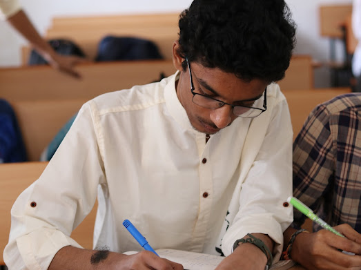

We had an event in college called Navras. It happened before the Navratri vacation. We had to wear traditional attire, and I wore a white kurta with blue jeans. I was practicing mathematics problems (Matrices and Calculus). I was deeply focused and couldn’t concentrate on what was happening around me. Meanwhile, a boy in our class brought a DSLR camera and started capturing photos. He took a few photos of me while I was studying.

I like teaching. One day, our PPS (Computer Science) ma’am gave us an assignment. My topic was File Handling. I thought of combining a movie and the subject, so my presentation became an amalgamation of the Ghajini film and file handling.
I also made notes for Basic Electrical Engineering (BEE). I literally enjoyed doing it. It helped me during exams.
BEE Electrical Machine NOTES DOC
Along with BEE, I also made notes for Computer Science. I typed everything from top to bottom. It enhanced my aesthetic skills.
My Youtube videos
I also made tutorials during my 1st semester. They helped many students. They also helped me during examinations through active learning.
"Karma Calling" implies that one's past actions (karma) are catching up with them—the inevitable return of consequences for previous deeds. We had an assignment in our English lab to make a PowerPoint presentation. I made a PPT expressing my views on karma. Everyone praised me, and my English ma’am asked my age. When I said I am 19 years old, she said I was too young to understand karma, and she also mentioned that when she was 19, she didn’t bother about all this.
I prepared deeply for exams, and even at the last minute, I used to clarify my peers’ queries. I really enjoyed the exam preparation time.